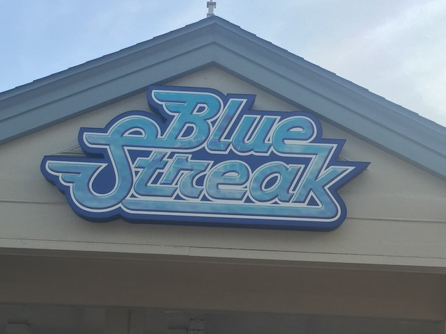
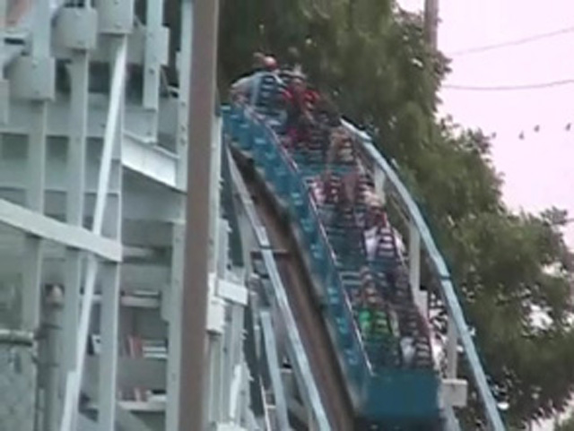
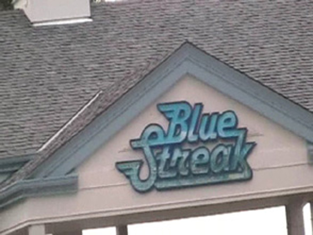

| |
Blue Streak Review

We're here at Cedar Point and todays ride we'll be reviewing is Blue Streak. Once you get in the cars and pull down the lap bars and buckle the seatbelt, you're on your way. After a brief turn out of the station, we start climbing the lifthill. When you see a hut sort of structure, you're at the top of the lifthill. We then head down the first drop. It's a fun first drop that gives us a good amount of speed. Then we head into what looks like a small bunnyhop. We fly right over it and get a little bit of airtime. After that, we head into another bunny hop. Though this one has a sort of curve to it, but there's not too much laterals. After that, we head straight up into a nice sized hill. While we're at the top, we lost a good chunk of speed getting over this hill. But remember. What goes up must come down. We plummet down the hill, gaining all the speed that we had before. Then we fly through some straight track and up into another hill. We've reached the turnaround. We get a nice view of the parking lot as we go around the turnaround. You'll see a sh*tload of cars most likely. But before you can count the number of cars there are, we drop back down to the ground before roaring into a tiny hill. Though the hill is too small to provide airtime, it's still cool. Then we rise up into a bunny hop, where we get a little airtime. Then we rise back up. But instead of a typical bunny hop drop down, we fall back down at a not so steep angle (There's a slight curve to it by the way). We then rise up into a slightly curved bunny hop and get some more airtime. Then we rise up into the brake run, which is under a roof, so that looks cool (And that's also slightly curved). Overall, Blue Streak was a better wooden coaster than I thought it would be. I'd definetly recommend riding it if at Cedar Point.
7/10
Location: Cedar Point
Opened: 1964
Built by: Philadelphia Toboggan Coasters
Last Ridden: June 20, 2021
Blue Streak Photos







Home
|